As global warming and other planetary catastrophes are worsening, tension forms between the ecosystem and the future—when will Earth be healthy again? How do we get there faster? When the media force-feeds us the doom of the biosphere on a global scale, it can be difficult for an individual to appreciate the sustainable progress we have made thus far. The Climate Clock, for example, is designed to instill fear, in that we are running out of time to turn things around. It is here where I observe how design influences our perception of the future; what role can design play instead to show our progress? How can design influence our perception of “doing enough”?
The Bottom of My Garden is the concept for an app designed to ease this tension by focusing on you. This experience displays the sustainable progress of an individual through the metaphor of a garden. While Earth's ecosystem is vast and difficult to quantify, a garden is small and local, benefiting solely from its caretaker. Users create their own personal ecosystem, thriving on the tasks they complete, to help integrate sustainability into their daily routine.
Through The Bottom of My Garden, I design an intimate user experience where sustainability feels attainable. Users are guided through the app by illustrations and animations to feed their garden with task completion, such as carpooling or taking a shower in less than five minutes. Over time, the garden quantifies the user's personal efforts without comparing their impact to a global degree of change. Users experience design that is meant to encourage. By the aid of these visuals, users can better digest lengthy, overwhelming realities into smaller, more helpful and hopeful possibilities.
How it Works
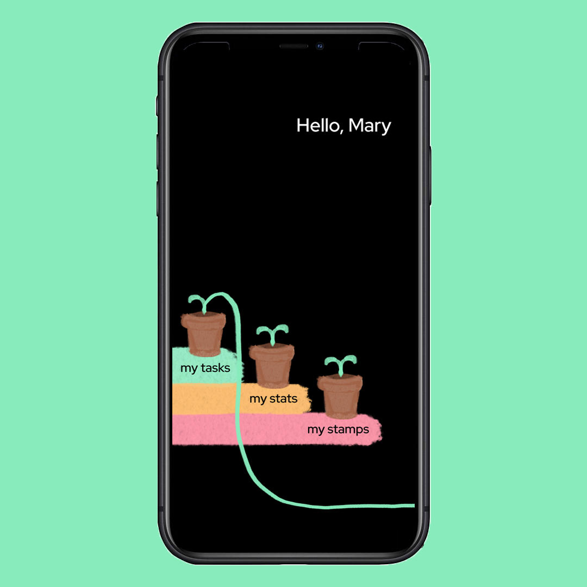
The Homescreen
The homescreen is where you will find navigational tabs leading to different parts of the app: "my tasks", "my stats", and "my stamps".
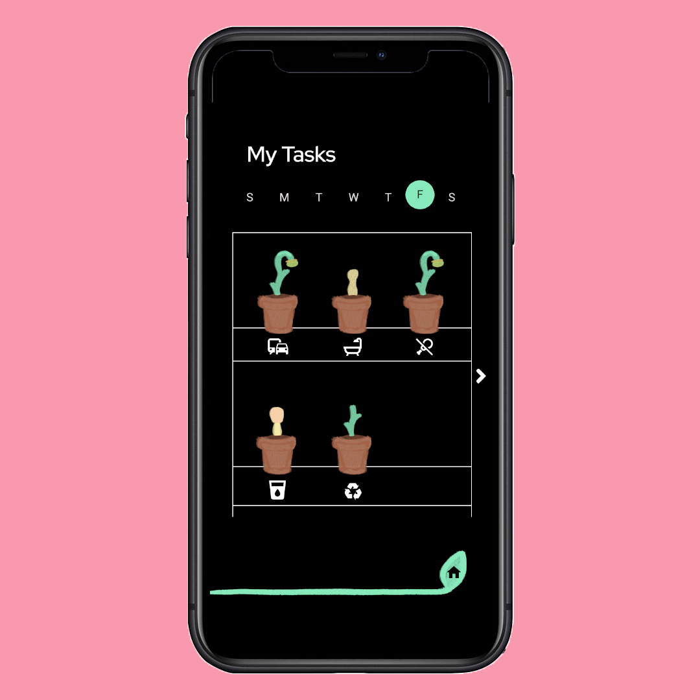
Viewing My Tasks
To view your dashboard of sustainable tasks, you tap "my tasks" from the homescreen. In the tasks dashboard, you will find potted plants of your current week's progress keeping up with each task. The more developed the plant, the more often you've been keeping up with that task in the current week.
Updating a Task
When you are ready to log a completed task, simply tap the potted plant with the icon of your task. Once you are on that task's page, mark that you have completed the task for today. The plant will grow a bit more each day you check this off.
Methodology
The ideas behind my thesis came from a few places. I have a history in the sciences, an interest in environmental justice, and a passion for cutting-edge technology. I started breaking down the components of these sectors of my brain, and came up with my Methodology Ant Farm. The cascade of ant farm anatomy helped me visualize the paths that cross between seemingly unrelated concepts. I even feature ants to represent my train of thought passing through and populating certain ideas.
My methodology map eventually led me to consider my specific beliefs as a designer. What is graphic design to me? What is graphic design to others? In studio lecture, my professor provided us with a brainstorming map that particularly caught my attention.
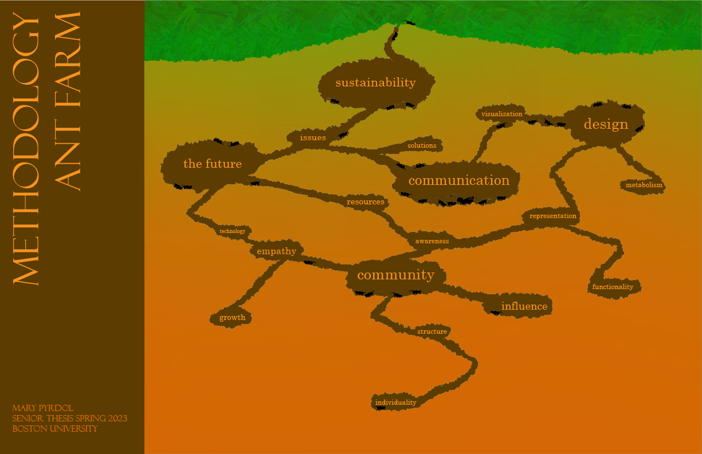
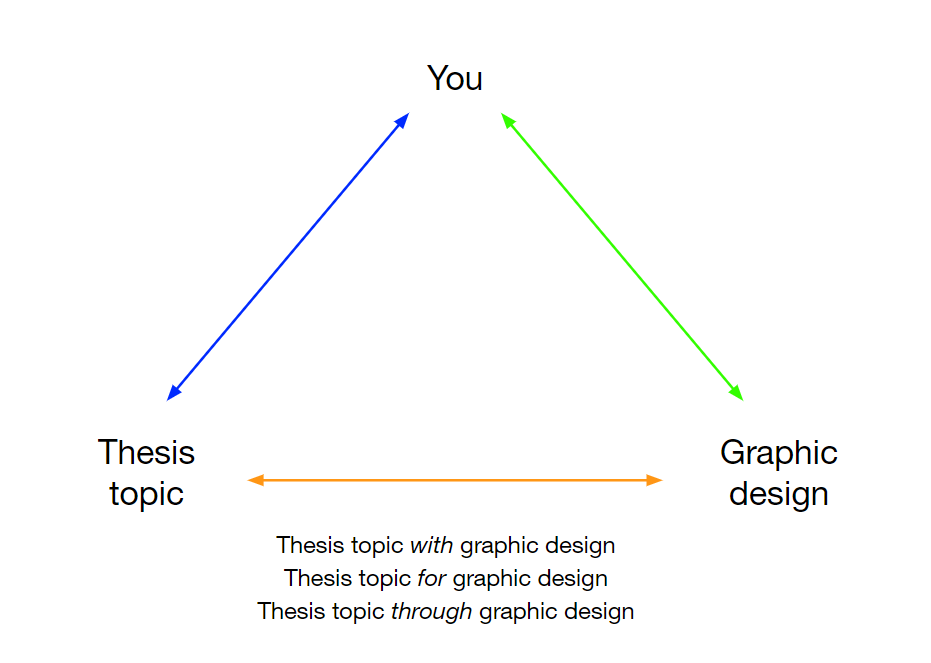
This triangular diagram led me to ask myself how exactly graphic design is helping me deliver my thesis. I use graphic design as a tool. I use graphic design as if it is a machine, helping me translate complicated ideas into comprehensible visuals. I took this further into my process and investigated specific questions I was interested in related to communication. What am I communicating? As a graphic designer, someone who understands the design machinery, how can I provide guidance?
After my experience with NASA Psyche Inspired and BU Spark!, I was able to develop the concept of futurism to closer align my thesis project with my career interests. Both of those previous experiences of mine concern how design affects communication to the viewer. In my notes, I wrote “future + tasks + illustrate”. That was the point where I finally evolved my brainstorming into the concept of a personal garden app to track a user's sustainability tasks.
What is the most appropriate thing to make?
Am I making interesting forms to visualize quantities?
What am I presenting?
How do I relate it to the viewer?
After a series of specific questions, I was then much more aware of what exactly I was doing. My vision was to generate an app to help the user grasp sustainability on a smaller, more local scale. I knew I wanted to work with “the future” in some capacity, and helping people improve how they live in the future was how I could get there. I wanted people to envision their future of sustainability.
How do you keep something alive?
How do I re-envision what a garden looks like?
Showing decay over time?
How does it grow taller?
Limits?
Does it fall?
Seamless loops?
Add more details to plants as they grow?
Plant could be complete by the end of the week?
How does the individual grasp this?
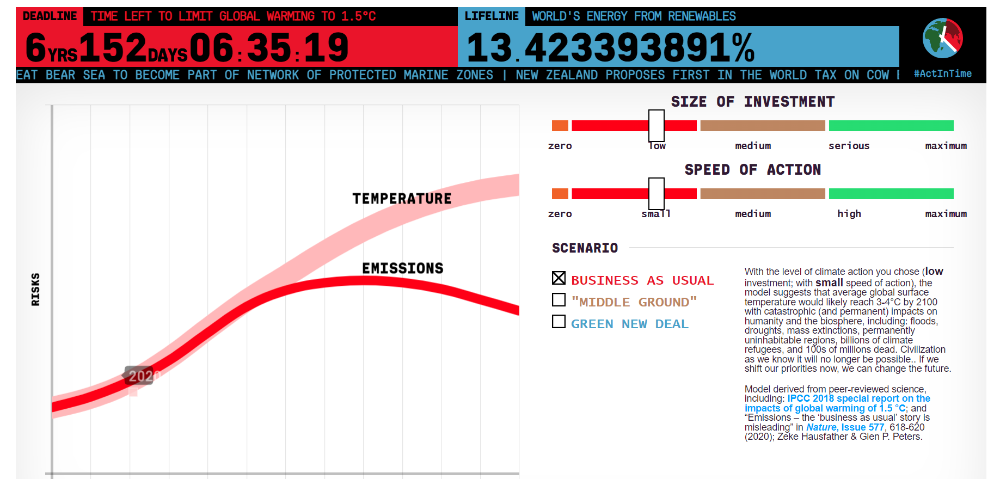
The Problem
So, what's the problem? I often found the usual perspective of sustainability that people consume is that it is our last resort to save the planet. That perspective is not entirely wrong, however it installs this sense of fear in the viewer as they try to transition their lifestyle before time runs out to turn things around. In my thesis statement, I mentioned the Climate Clock, which is basically a clock counting down the time we have left before global warming is irreversible. It features a giant clock with black text on a red background, accompanied by an interactive graph for the user to see how our investment in sustainability and speed of activating it can buy us more time. This only makes the goal seem further away as it becomes a pipedream.
My Hypothesis
My plan was to completely flip the Climate Clock narrative and find a way to localize the impacts that people are making on the daily. Instead of worrying people about how effective the transition process should be, I could encourage the transition by highlighting significant changes on a personal level. With this methodology, I could assist users in ignoring comparisons of their impact to a global degree of change, and instead focus on how much they are doing to better their life in the now.
Process
While I had my ideas in place, I then faced the ultimate design question: what is this going to look like? How do I visualize this? My train of thought started looking for inspirations, and I began with looking at ways I could pictorially define what “future” might look or feel like.
I looked at a lot of artwork ranging from Walt Disney's Tomorrowland Concepts, to 1940s Work Projects Administration (WPA) tourism posters, to my own projects.
From Walt Disney's posters, I enjoyed how they generated optimistic visions of advancing technology. From the 1940s WPA tourism posters, I was interested in how they help viewers picture what it might be like to visit the locations solely through the use of concept design. From my own past artwork, I was looking for how to form context around my identity as a graphic designer.
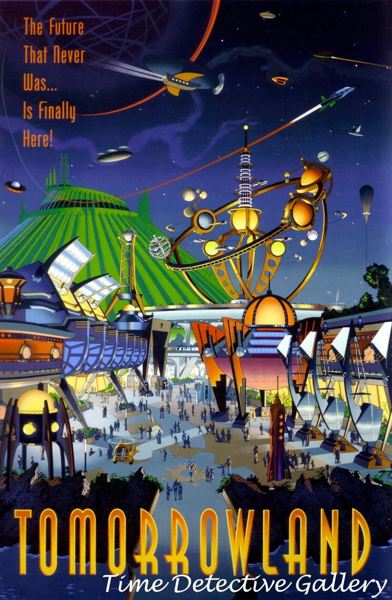
Walt Disney Tomorrowland Poster
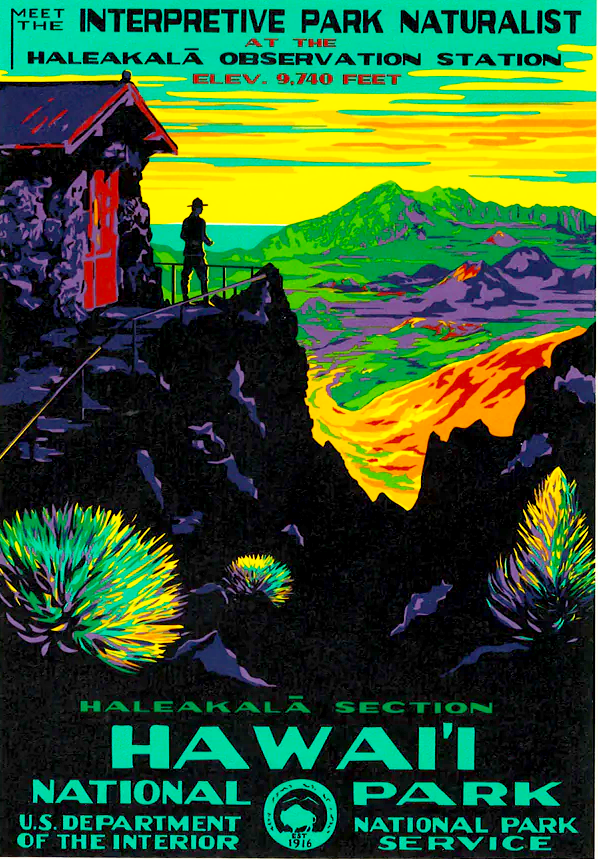
1940s Work Project Administration tourism Poster
My Thoughts on Thesis Book (2022)
Design Experiments
After gathering inspirations and relevant past projects, I then started my design experimentation. I dedicated four consecutive weeks to purely making and seeing what I could design to help me narrow down how I want this project to look and feel.
As part of our thesis process, we were recommended to interview someone in the design industry with skills related to our theses. For my senior thesis interview, I chose to introduce my project ideas to Patrick Smith, Creative Director and Animator of his game portfolio titled Vectorpark. I chose to interview Patrick Smith because I felt as though he could help me develop ideas for the animated, storytelling components of my app idea. I also have admired his work since I was a child, and I was interested in hearing about what graphic design/web design was like during the 90s and 2000s.
After executing many different experiments, I was then able to get a better idea of the different visual language components of my app project. How do I form a visual identity? Next, I wanted to do some research on existing app designs pertaining to plant care to see where I could pull certain functional components from.
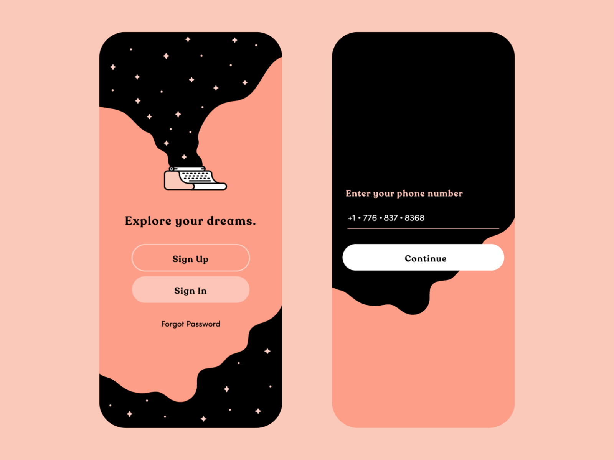
While wanting to design an immersive world for the user to enjoy returning to, I was also looking for ways to display information about specific tasks (plants) and their progress growing. Simultaniously, I didn't want the dashboard to feel too plant-oriented because I wanted the app to suggest some degree of exploration (similar to what Patrick Smith told me about Vectorpark) and freedom from any rigid genre of app. I was thinking of designing a curious and uplifting space for users to enjoy tracking their efforts. Since this would be a time-based narrative for the user's data to be contextualized into, I figured pulling individual frames of my animations would help show a plant's growth in-progress. For example, showing a plant growing only halfway to completion and communicating to the user their efforts. As much as I need to reward the user, I also need to give them an incentive to come back.
Mockups
For my mockups, my professors advised me to start off designing the most important components of the app first and work my way outward. I decided to start with the main data dashboard. For this dashboard, I was concerned about the user being able to see all of their data all at once, when I really did not have to design it that way. I wanted this app to feel like a journey that the user must explore, so I was able to refine these dashboard designs to accommodate for more in-depth pages of the app.
Another concern I had about the dashboard was how I would display not only the user's current data, but also allow them to compare the current data to past data. I consulted my STEM friends because they had recently taken a statistics course at BU, and they suggested that I try giving the user highlight messages, similar to the highlight messages on the Apple Health app. These highlights would sound like “your progress this week is 28% more than last week”. This led me to consider making a whole separate section for the app called “my stats”.
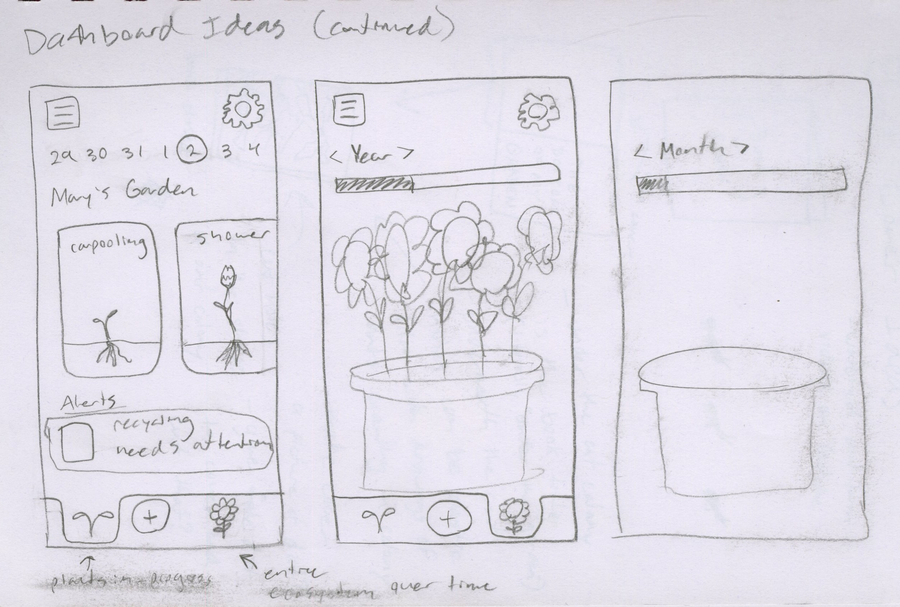
For the “my tasks” section of the app, I needed to focus on making sure I could utilize the animations of the plants I made in my week 2 design experimentation. I designed the tasks dashboard to look like a shelf of plants, similar to shelves of plants at a greenhouse, to help give the design more context than just randomly placing the plants on the page. From there, I figured you could tap on a plant or the symbol of the task to expand the plant and see the current status of that task in the week the user is working on. This way, I could still display relevant data in different parts of the app outside of the stats section.
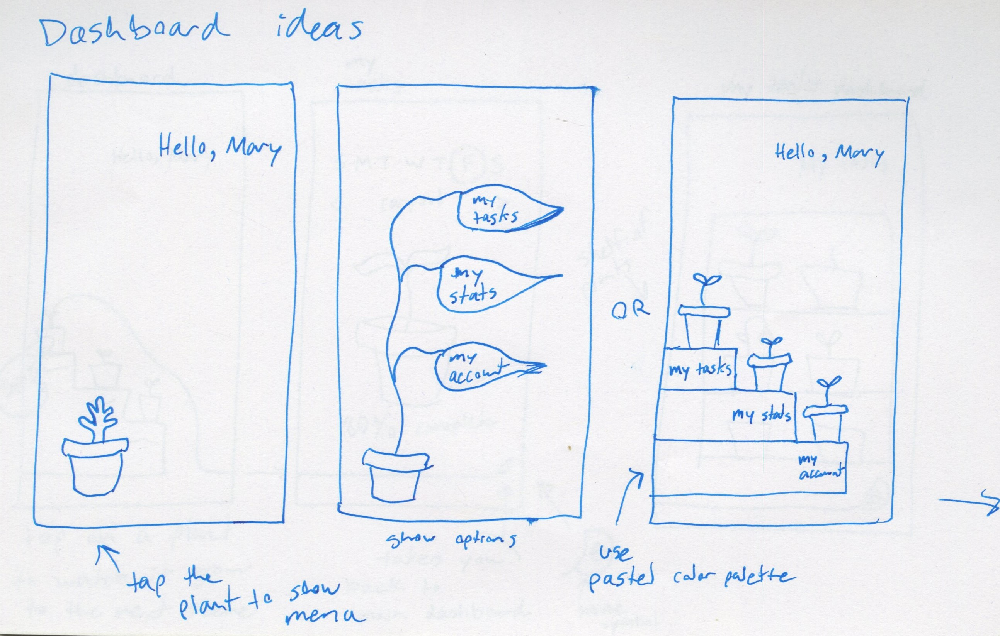
Lastly, the “my stamps” section was developed off a whim because I wanted somehow to include the stamp designs I made in my week 4 design experimentation. I figured I could turn the stamps into badges the user earns by completing specific achievements. This way, the user is even more rewarded after the fact of watching their plants grow from their progress. By keeping up with the app, users would unlock stamps by achieving certain goals like their first full week, month, or year using the app.
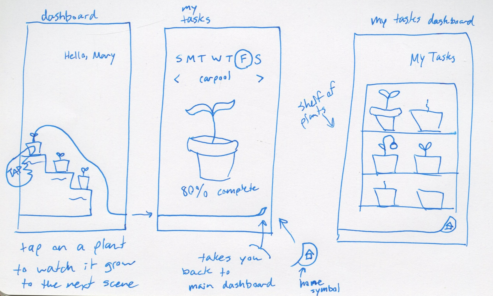
Design Solutions
Finally, I arrived at my hi-fi wireframes for The Bottom of My Garden. For the landing page, I feature a finalized version of its logo. In my initial designs for this logo, I made the “fruit” blue and green to reflect the colors of the globe. I changed the colors to be pastel green, orange, and red to attach the logo more to the animation frames I had designed prior to the logo experiment. This way the branding would connect more to the visual aesthetic of the rest of the interface. Those three pastel colors also are the colors of the three different stages of a ripening tomato, which is also featured in my animation sequences for the tomato plant growing in the app.
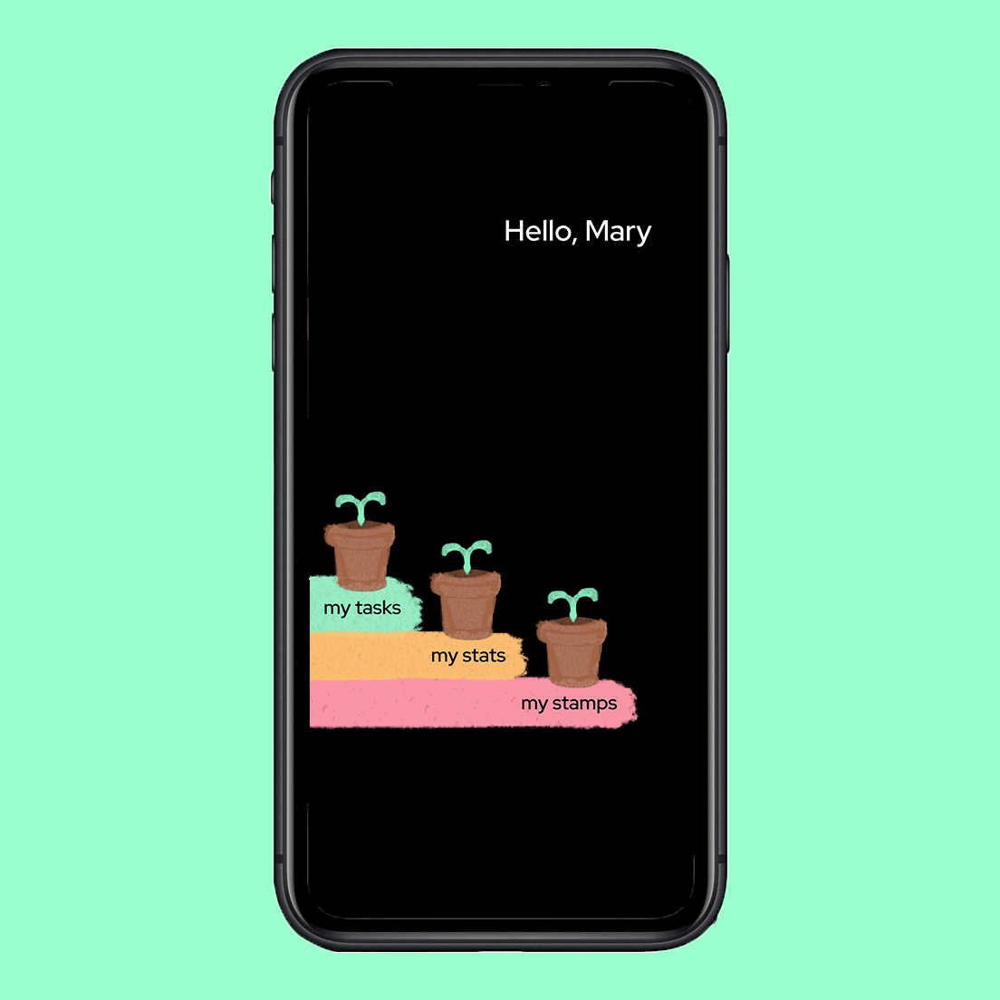
After logging into the app, the user is brought to the home screen. The home screen features three small potted plants, each labeled underneath as either “my tasks”, “my stats”, or “my stamps”. I digitally drew the background of the labels to match the texture of my animations and make the home page cohesive with the details in the internal pages. When the user taps on any of the three potted plants, the plant will grow a vine across the screen, taking the user to that specific internal page. Once in any of those internal pages, the user can tap on the home button, and the vine will retract back into the plant. Plants don't normally “retract” their parts, however I thought it would be a playful artistic detail to make the app feel less static and more lively. I enjoyed the idea of watching the vine travel across the screen to take the user to another place.
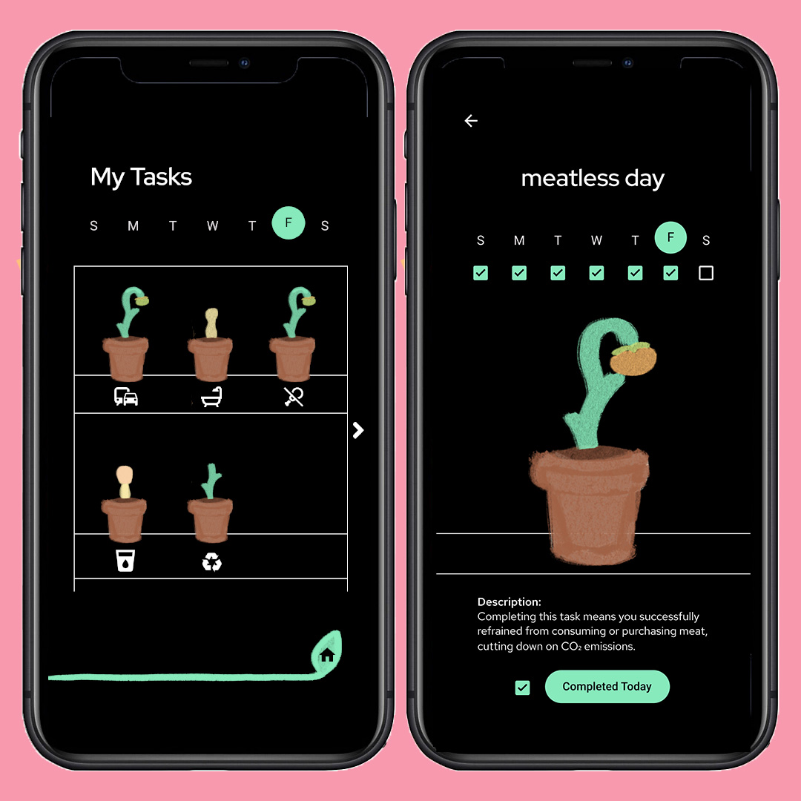
Once the user enters the “my tasks” section, the vine takes them to the dashboard where their current tasks live. I wanted the dashboard to feel more contextualized with the plant motifs, so I designed it to look like shelves of a greenhouse for the plants (which represent tasks) sit on. Underneath each plant is their respective icon for a specifi c task. For example, under the tomato in the top left of the shelf is a car/transportation icon to represent the task of “carpooling/taking public transportation”. When the user taps on either the plant or the icon, they are taken to the internal page where they can see the current status of their progress that week for a specifi c task. As soon as the user updates the current day's status of whether or not they completed a task, the plant will progress into its next growth phase. This way, the user can witness the growth of the plant right in front of them, rewarding their efforts with the advance of the tomato plant.
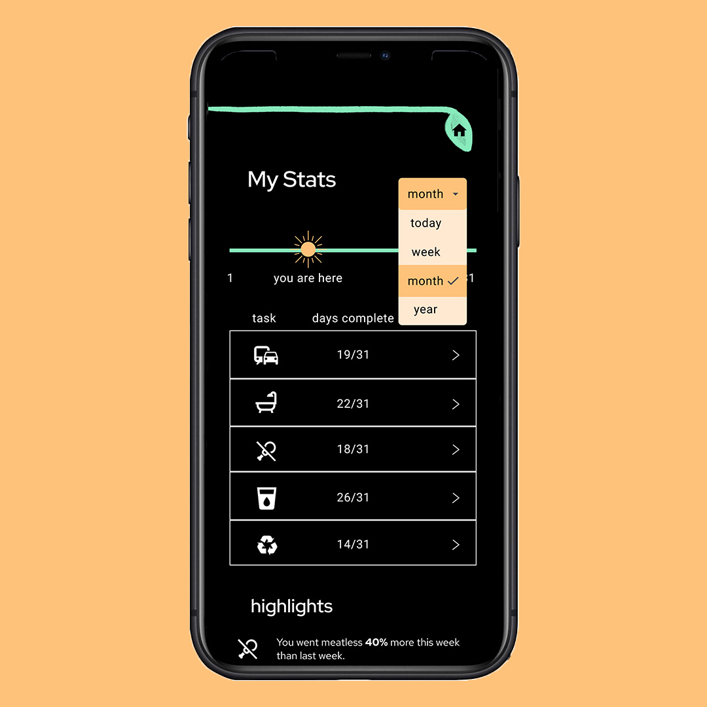
If the user wants to compare data from previous weeks, months, or years, they can journey to the “my stats” section of the app from the home page. Once taken to the stats dashboard, the user is greeted with an organized table charting the tasks from their tasks dashboard. The stats dashboard has options for the user to view the data from the current week, the past month, and the past year (up until where they are).
The design for this page was inspired mainly by the Apple Health app and how they display their statistics for a user's walking/stepping data. I pulled the Figma design files for the app and turned it into my own with my softened color schemes and more rounded shapes for bars and buttons.The Apple Health app also has a “highlights” section where they summarize data comparisons to make it easier for the user to digest just how much change has been made. I thought this concept really resonated with the point of my thesis because the end goal for me was to design an app that helped people digest sustainability in an easier way.
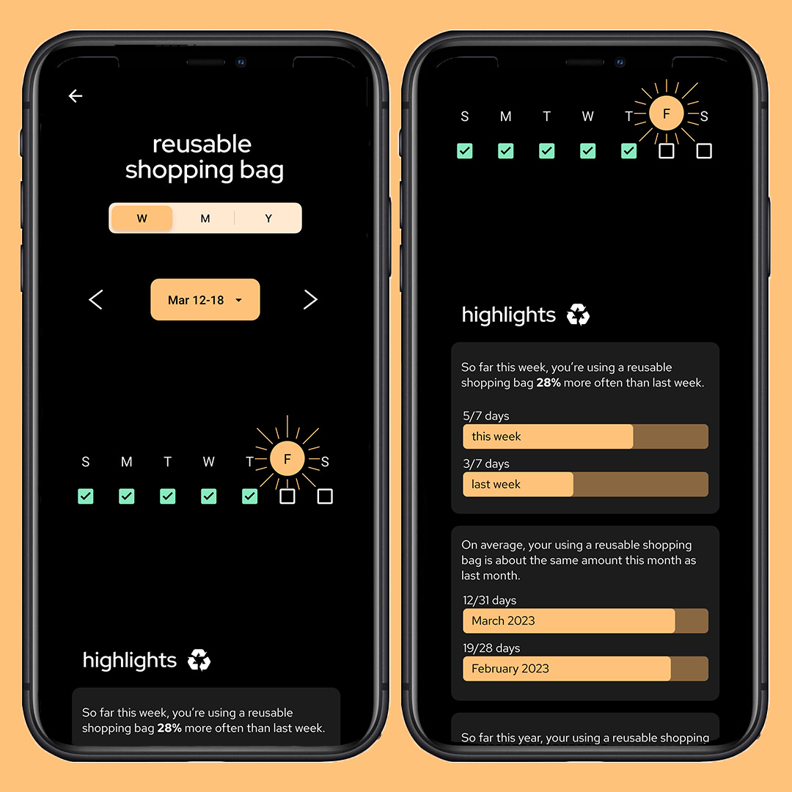
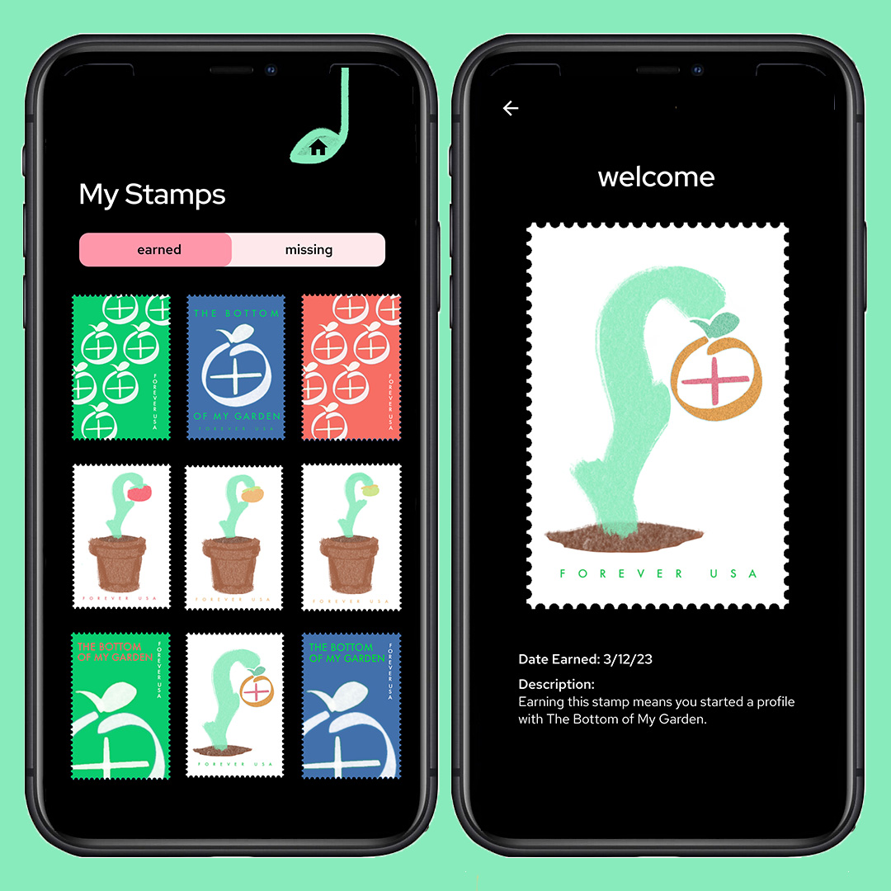
Finally, as the user keeps up with the app and continues to interact with its tools, they have the ability to earn achievements for their progress in the “my stamps” section. This section was inspired by Patrick Smith of Vectorpark, who recommended that I reward the user with something to keep them engaged in not only the mission of the app but the artistic elements of its design. I pulled the stamps I designed from my week 4 design experimentation and turned them into personal achievement stamps that users can earn while they consistently interact with the app. The sample description of an achievement I designed was for the “welcome” stamp, which describes that the user earned that stamp because they joined The Bottom of My Garden. The “my stamps” dashboard is a simple scrollable screen displaying either the stamps that the user has earned or is still missing.
Conclusion
From the Fall 2022 Senior Studio, my Thoughts on Thesis book was named "In The Bottom of My Garden". I changed it this semester for my actual thesis project because I thought that The Bottom of My Garden feels a lot closer to “the bottom of my heart”, which my professor delightfully noted the title sounded and felt like. I wanted this experience to be enjoyable while also offering approachable guidance to sustainability. We need to regularize sustainability for a healthier future of the ecosystem, so I figured this app would be a good place to help the transition of lifestyle choices, big or small.
Overall, I was extremely satisfied with how this entire project turned out. I was able to successfully align my thesis with my beliefs as a designer. Graphic design is a machine, translating complex topics into more approachable and understandable concepts. I want to continue exploring my passions for the future and the future of design technology, and designing this app helped me explore my potential with User Experience/ User Interface design (UX/UI design). I'm glad I took the time to connect my passion for this field of design to my thesis about sustainability.


 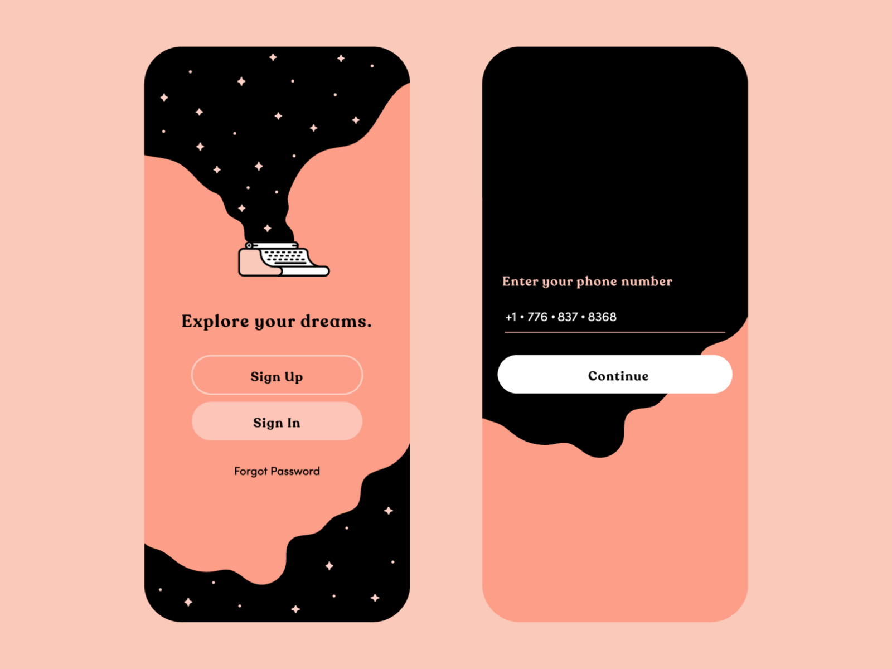
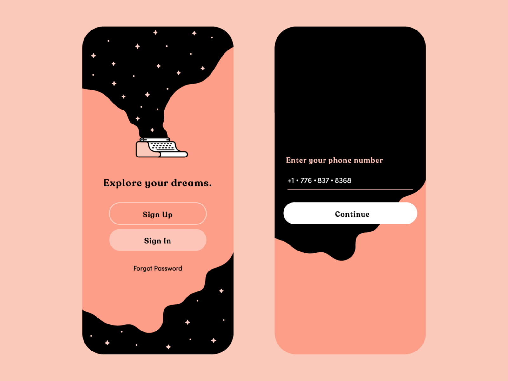